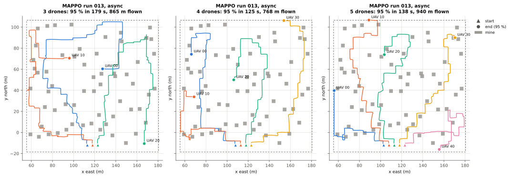
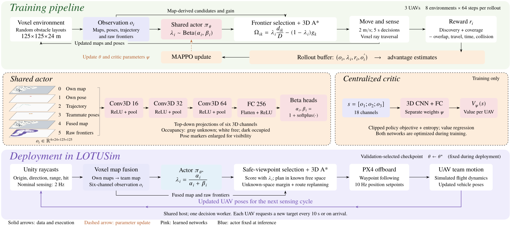
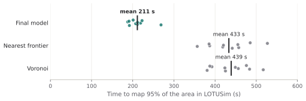
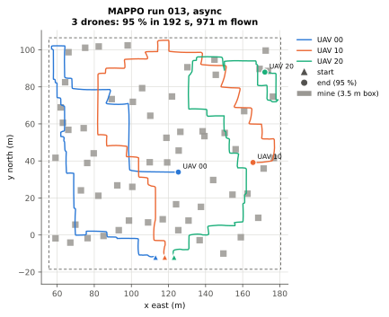
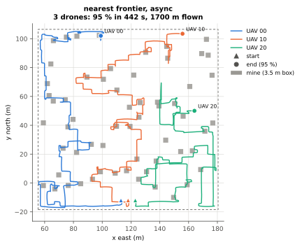

Cooperative UAV Exploration
with Multi-Agent Reinforcement Learning
Learning the distance–information trade-off
from 3D voxel simulation to Unity sensing and PX4 flight.
Simulator imagery: LOTUSim-Energy
⌄Recorded Mission Replays

One policy · Three team sizes
- Time to 95%
- 170 s
- Team flight distance
- 827 m
Three UAVs using the shared policy trained with three agents.
One recorded mission per team size. These examples show transfer without retraining; they do not establish a scaling trend.
Download this GIFAbstract
Exploring efficiently means balancing nearby targets against areas that could reveal more unknown space. This project learns that balance with multi-agent reinforcement learning: a shared policy chooses a distance–information weight for each UAV, while frontier selection and a 3D A* planner turn that weight into a target and route.
The policy is trained in a lightweight voxel simulator and then used inside LOTUSim. Unity supplies range measurements, the exploration host updates and fuses maps, and PX4 executes the planned waypoints. The learned policy selects exploration behaviour; it does not directly command motors.
Exploration with Different Team Sizes
The same policy, trained with three UAVs, also guides teams of four and five without retraining. These top-down trajectories show how the drones divide the exploration area in the three recorded missions above.

One mission is shown for each team size. These examples demonstrate execution with larger teams; they do not establish how performance scales with the number of UAVs.
Training & Deployment

A learned weight, a geometric planner
The actor outputs λ. Separately, the map provides candidate frontiers, their distances and estimated gains. The planner chooses a low-cost candidate using:
Here d is the distance to a candidate, D is the volume diagonal, and g estimates nearby unknown volume. A higher λ favours shorter travel; a lower λ favours information gain.
Training and execution
MAPPO trains three agents with a shared actor and a centralized critic. Each observation is a 6 × 24 × 125 × 125 volume. Three 3D convolutional layers feed a 256-unit fully connected layer and the Beta heads.
At deployment, the actor uses the Beta mean. A shared host fuses the maps and schedules decisions every 10 seconds or on arrival. Safe viewpoints, an unknown-space margin and route replanning adapt the planner to Unity sensing and PX4 flight.
Training configuration and transfer details
The training environment uses a 125 × 125 × 24 m volume with 1 m voxels. Eight parallel environments collect 64 decisions each per update. Training uses 5 s decisions and idealized 2 m/s motion; validation selects the checkpoint.
In LOTUSim, range observations come from Unity collider raycasts. PX4 receives position setpoints at 10 Hz, with a 2.5 m/s horizontal cap in the reported minefield missions. Occupied routes trigger replanning. The critic is used only during training; the actor weights are not updated during deployment.
Benchmark Comparison
LOTUSim minefield · 3 UAVs · 10 missions per methodThree UAVs explore the same 125 × 125 × 24 m minefield with 60 floating obstacles. Each method is evaluated over ten missions from the same starts. All missions reached 95% coverage.

Mean time to 95% coverage
About 53% less time and 43% less flight distance than nearest-frontier in this fixed simulated scenario.
Final model: 203.0 ± 23.4 s. Nearest-frontier: 430.3 ± 50.7 s. Values are mean ± standard deviation.
| Method | Mean T95 (SD) | Mean team distance | Mine-box entries |
|---|---|---|---|
| Nearest-frontier | 430.3 s (50.7) | 1,734 m | 4 in 10 missions |
| Voronoi assignment | 436.3 s (45.4) | 1,725 m | 3 in 10 missions |
| Learned policy | 203.0 s (23.4) | 988 m | 1 in 10 missions |
Mine-box entries count crossings into configured obstacle boxes, not confirmed crashes. Missions vary because sensing and decisions are asynchronous. These are simulation results, not physical-flight or general safety guarantees.
Compare the flown trajectories


Beyond the demonstrations
What the experiments establish
The recorded missions demonstrate that the trained exploration policy can operate with Unity range sensing and PX4 simulated flight.
Evaluation is still limited to the tested settings. Communication loss, noisy localization, broader environments and physical flight remain future work. Four- and five-UAV examples are single missions, so their times should not be read as a team-size benchmark.
Resources & Related Work
Read furtherThis project
The extended report describes training and the original transfer methodology. The recorded LOTUSim mission results are summarized on this page.
Related exploration methods
FA-MARL is the methodological starting point for this project. It learns how to balance travel distance and information gain within a frontier-based exploration pipeline. Our work adapts this approach from 2D ground-robot exploration to cooperative 3D UAV exploration and deployment in LOTUSim.
The works below inform the methodology and presentation; they are not additional baselines in the comparison table.